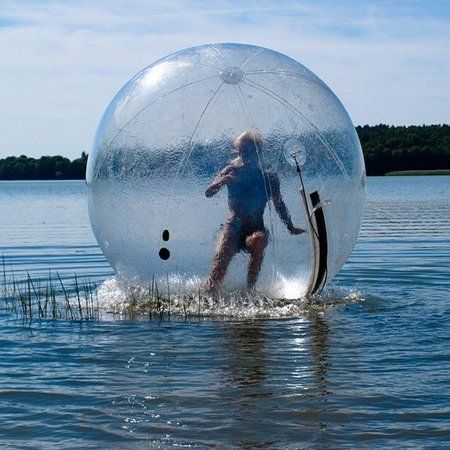
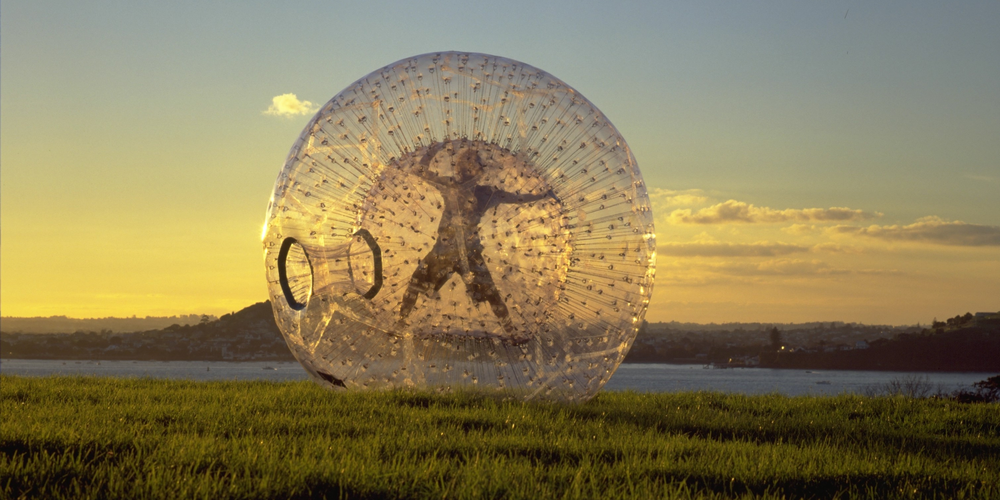
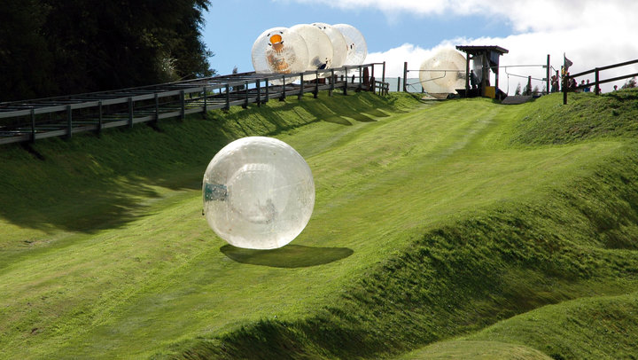

Melbourne Summer Water
Zorbing is coming
Jane Allison
10.10 2020
Water zorbing is also known as Aquazorbing or Water Walking. It is a seriously fun activity that is very popular and suitable for all ages, regardless of the individuals's physical ability. This form of "sport" involves you simply walking on the water surface. This is done while being in a Water Zorbing Ball. One can run inside, or walk or flip on the surface of the water without getting wet.

Downhill Zorbing Friends Meeting Session open for call
Agnes Lau
02.10 2020
If you're wondering what on earth Zorbing is, well it's pretty simple to explain really – we basically strap you into a huge ball and push you down a hill! That's all there is to it...but as you can imagine, it is terrifically thrilling fun! It's a bit like when you lie horizontal at the top of the hill and let yourself go rolling down only the big difference is our Zorbing ball gives you a whole new perspective as you roll down...upside down!
Questions over zorbing
Alexander Mckay
31.09.2020
A range of incidents around the world are leading regulatory and safety bodies to question the safety of zorb, hamster and water walking balls.
Reported incidents have seen clients asphyxiated while inside the giant sealed plastic balls – known by trade names including zorb, hamster and water walking balls, with the activity known as globe-riding, sphereing or orbing. In practice, after a person climbs into the big transparent plastic ball, it is inflated by a blower through an opening that is then closed shut, making it airtight. People then roll or walk across water and other surfaces, including ice and grass - like a hamster in a ball.

Let’s go Zorbing!
A Photo Essay
Amanda Williams
13.08.2020
The premise itself sounds ridiculous. First, you dive head-first into an inflatable plastic ball that’s suspended within a larger inflatable plastic ball. Next, about an inch of water is added into the inner ball with you. Then, you are pushed down a large hill.
Ridiculous, right? Actually, it’s just another New Zealand-born adventure sport, known as zorbing.
